Поля Нормандии

Ближний Восток

Линия Мажино

Солнечный Город

38 Параллель
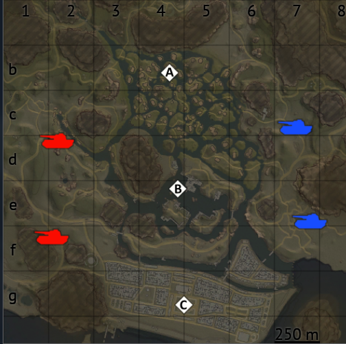Вьетнам

Европейская Провинция
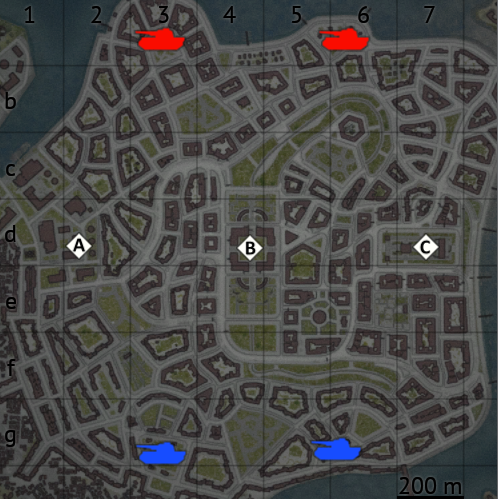Швеция
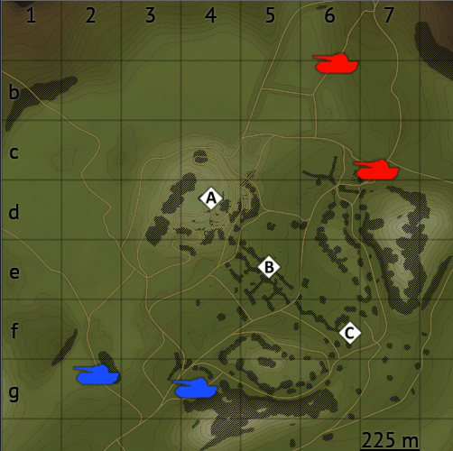Карпаты
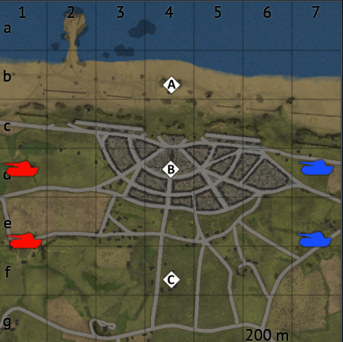Нормандия

Аральское море
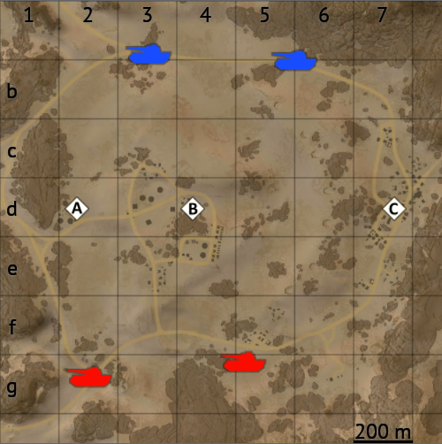Синай

Северная Голландия
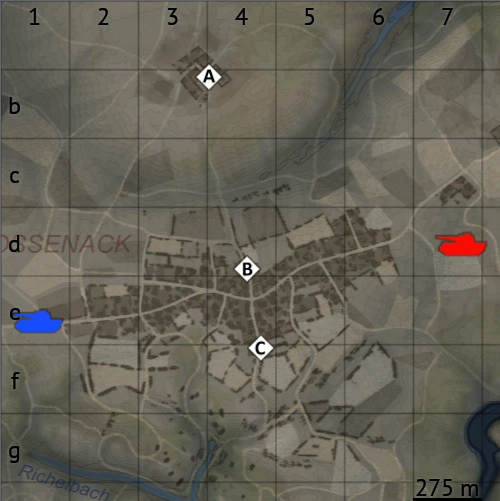Хюртгенский Лес
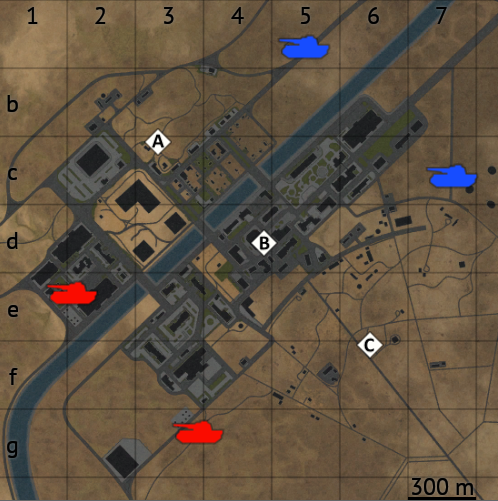Космопорт

Огненная Дуга

Грузовой Порт
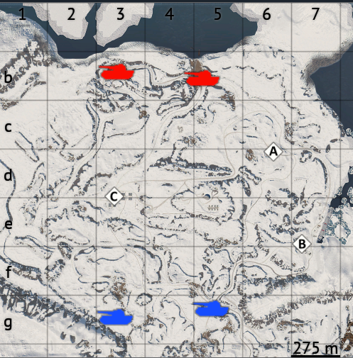Арктика

Заброшенный Завод

Эль-Аламейн

Золотой Карьер
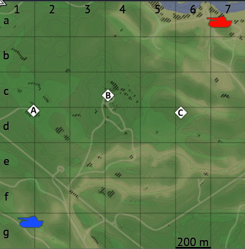Моздок
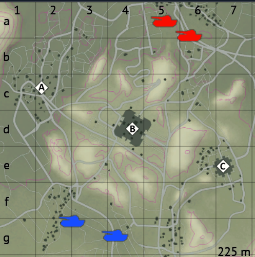Япония
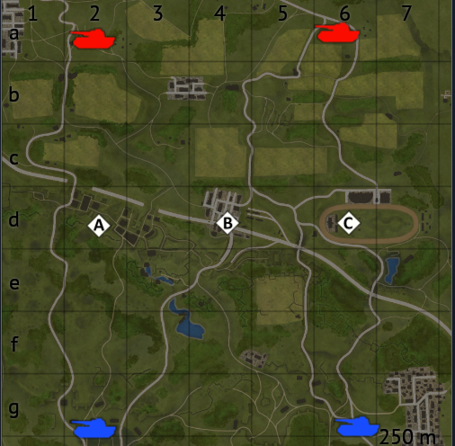Фландрия
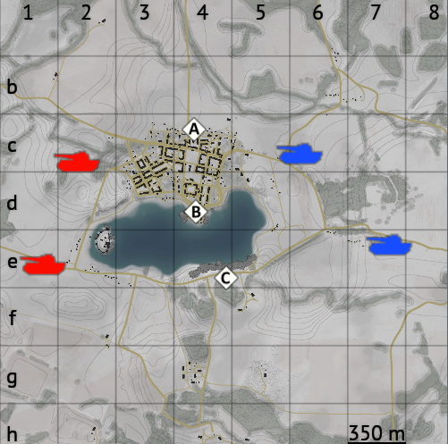Польша
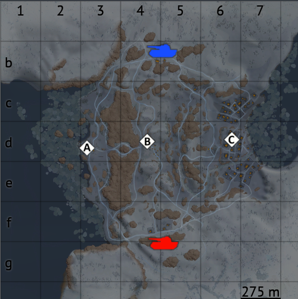Финляндия

Американская Пустыня
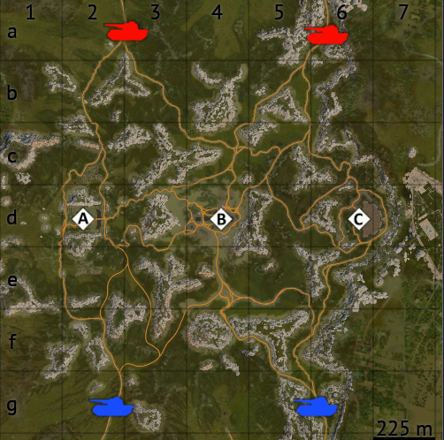Аттика

Восточная Европа

Иберийский замок
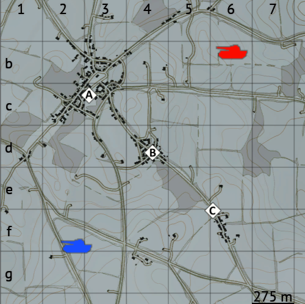Арденны

Порт Новороссийск
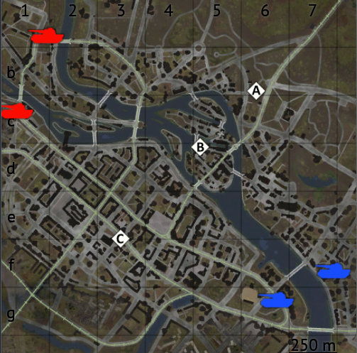Бреслау

Северск-13